knitr::opts_chunk$set(
echo = TRUE,
message = FALSE,
warning = FALSE
)
library(tidyverse)
library(data.table)
library(janitor)
library(ggthemes)
library(here)
library(lubridate)
library(knitr)
library(broom)Handling Missing Data with Imputations in R
The problem of missing data
Linear regression with incomplete data
Missing data is a common problem and dealing with it appropriately is extremely important. Ignoring the missing data points or filling them incorrectly may cause the models to work in unexpected ways and cause the predictions and inferences to be biased.
In this chapter, you will be working with the biopics dataset. It contains information on a number of biographical movies, including their earnings, subject characteristics and some other variables. Some of the data points are, however, missing. The original data comes with the fivethirtyeight R package, but in this course, you will work with a slightly preprocessed version.
In this exercise, you will get to know the dataset and fit a linear regression model to explain a movie’s earnings. Let’s begin!
Print first 10 observations
biopics <- read_csv("data/biopics.csv")
# Print first 10 observations
head(biopics, 10) %>%
kable()| country | year | earnings | sub_num | sub_type | sub_race | non_white | sub_sex |
|---|---|---|---|---|---|---|---|
| UK | 1971 | NA | 1 | Criminal | NA | 0 | Male |
| US/UK | 2013 | 56.700 | 1 | Other | African | 1 | Male |
| US/UK | 2010 | 18.300 | 1 | Athlete | NA | 0 | Male |
| Canada | 2014 | NA | 1 | Other | White | 0 | Male |
| US | 1998 | 0.537 | 1 | Other | NA | 0 | Male |
| US | 2008 | 81.200 | 1 | Other | other | 1 | Male |
| UK | 2002 | 1.130 | 1 | Musician | White | 0 | Male |
| US | 2013 | 95.000 | 1 | Athlete | African | 1 | Male |
| US | 1994 | 19.600 | 1 | Athlete | NA | 0 | Male |
| US/UK | 1987 | 1.080 | 2 | Author | NA | 0 | Male |
Get the number of missing values per variable
# Get the number of missing values per variable
biopics %>%
is.na() %>%
colSums() country year earnings sub_num sub_type sub_race non_white sub_sex
0 0 324 0 0 197 0 0 Fit linear regression to predict earnings
# Fit linear regression to predict earnings
model_1 <- lm(earnings ~ country + year + sub_type,
data = biopics)
summary(model_1)
Call:
lm(formula = earnings ~ country + year + sub_type, data = biopics)
Residuals:
Min 1Q Median 3Q Max
-56.283 -20.466 -5.251 6.871 285.210
Coefficients:
Estimate Std. Error t value Pr(>|t|)
(Intercept) -743.2411 273.2831 -2.720 0.00682 **
countryCanada/UK -6.9648 19.5228 -0.357 0.72146
countryUK 7.0207 15.4945 0.453 0.65071
countryUS 30.9079 15.0039 2.060 0.04004 *
countryUS/Canada 31.6905 18.8308 1.683 0.09316 .
countryUS/UK 23.7589 15.4580 1.537 0.12508
countryUS/UK/Canada -4.8187 29.6967 -0.162 0.87118
year 0.3783 0.1359 2.784 0.00562 **
sub_typeActivist -21.7103 13.0520 -1.663 0.09701 .
sub_typeActor -41.6236 16.8004 -2.478 0.01364 *
sub_typeActress -34.9628 17.5264 -1.995 0.04673 *
sub_typeActress / activist 7.1816 37.6378 0.191 0.84877
sub_typeArtist -25.2620 13.8543 -1.823 0.06898 .
sub_typeAthlete -10.7316 12.1242 -0.885 0.37661
sub_typeAthlete / military 66.3717 37.6682 1.762 0.07882 .
sub_typeAuthor -25.9330 12.6080 -2.057 0.04034 *
sub_typeAuthor (poet) -17.1963 17.1851 -1.001 0.31759
sub_typeComedian -29.3344 18.3419 -1.599 0.11053
sub_typeCriminal -7.3534 12.2475 -0.600 0.54857
sub_typeGovernment -16.9917 23.5048 -0.723 0.47016
sub_typeHistorical -4.0166 12.6665 -0.317 0.75133
sub_typeJournalist -30.6610 28.0016 -1.095 0.27418
sub_typeMedia -15.7588 16.7744 -0.939 0.34806
sub_typeMedicine 5.0987 21.0749 0.242 0.80895
sub_typeMilitary 15.1616 14.0730 1.077 0.28196
sub_typeMilitary / activist 29.8300 37.6688 0.792 0.42888
sub_typeMusician -21.1765 12.1482 -1.743 0.08206 .
sub_typeOther -17.5989 11.4405 -1.538 0.12476
sub_typePolitician -21.0700 37.6688 -0.559 0.57623
sub_typeSinger 1.0769 14.9161 0.072 0.94248
sub_typeTeacher 42.4600 37.6407 1.128 0.25997
sub_typeWorld leader 0.5964 16.2407 0.037 0.97072
---
Signif. codes: 0 '***' 0.001 '**' 0.01 '*' 0.05 '.' 0.1 ' ' 1
Residual standard error: 36 on 405 degrees of freedom
(324 observations deleted due to missingness)
Multiple R-squared: 0.1799, Adjusted R-squared: 0.1171
F-statistic: 2.865 on 31 and 405 DF, p-value: 1.189e-06Analyzing regression output
- You are interested in how well the model you’ve just built fits the data. To measure this, you want to calculate the median absolute difference between the true and predicted earnings. You run the following line of code:
- As some observations were removed from the model, the two vectors inside abs() have different lengths, and so the entries of the shorter one get replicated to enable the subtraction. Consequently, the resulting number has no meaning. Analyzing models fit to incomplete data can be treacherous
median(abs(biopics$earnings - model_1$fitted.values), na.rm = TRUE)[1] 21.66698Comparing models
Choosing the best of multiple competing models can be tricky if these models are built on incomplete data. In this exercise, you will extend the model you have built previously by adding one more explanatory variable: the race of the movie’s subject. Then, you will try to compare it to the previous model.
As a reminder, this is how you have fitted the first model:
- model_1 <- lm(earnings ~ country + year + sub_type, data = biopics) Let’s see if we can judge whether adding the race variable improves the model!
Fit linear regression to predict earnings
# Fit linear regression to predict earnings
model_2 <- lm(earnings ~ country + year + sub_type + sub_race,
data = biopics)
# Print summaries of both models
summary(model_2)
Call:
lm(formula = earnings ~ country + year + sub_type + sub_race,
data = biopics)
Residuals:
Min 1Q Median 3Q Max
-58.323 -16.237 -4.018 5.614 200.234
Coefficients:
Estimate Std. Error t value Pr(>|t|)
(Intercept) -139.27034 287.97218 -0.484 0.629031
countryCanada/UK 4.00206 18.25641 0.219 0.826643
countryUK 13.84774 14.91395 0.929 0.353943
countryUS 31.42015 14.32201 2.194 0.029069 *
countryUS/Canada 18.29811 18.65109 0.981 0.327403
countryUS/UK 29.40669 14.79424 1.988 0.047817 *
countryUS/UK/Canada 5.28487 34.26999 0.154 0.877553
year 0.08053 0.14277 0.564 0.573156
sub_typeActivist -22.70696 13.91011 -1.632 0.103718
sub_typeActor -37.18944 16.80696 -2.213 0.027722 *
sub_typeActress -29.08213 17.54697 -1.657 0.098561 .
sub_typeActress / activist 22.74806 34.10892 0.667 0.505370
sub_typeArtist -16.16366 14.44232 -1.119 0.264019
sub_typeAthlete 1.82705 13.21810 0.138 0.890163
sub_typeAthlete / military 81.76200 33.27768 2.457 0.014619 *
sub_typeAuthor -16.89061 13.34913 -1.265 0.206817
sub_typeAuthor (poet) -10.46216 17.81790 -0.587 0.557562
sub_typeComedian -29.04858 19.58703 -1.483 0.139185
sub_typeCriminal -3.63899 13.49577 -0.270 0.787636
sub_typeGovernment -3.98375 21.53144 -0.185 0.853347
sub_typeHistorical -1.84026 13.64400 -0.135 0.892806
sub_typeJournalist -19.52435 25.70076 -0.760 0.448085
sub_typeMedia -23.58188 18.39661 -1.282 0.200952
sub_typeMedicine 19.79476 33.28029 0.595 0.552465
sub_typeMilitary -11.90055 15.58559 -0.764 0.445772
sub_typeMusician -11.87866 12.76816 -0.930 0.352999
sub_typeOther -8.26334 12.46291 -0.663 0.507854
sub_typePolitician -13.12470 33.28805 -0.394 0.693677
sub_typeSinger 12.59513 15.42311 0.817 0.414829
sub_typeTeacher 52.19210 33.25064 1.570 0.117624
sub_typeWorld leader 5.70258 15.84955 0.360 0.719272
sub_raceAsian -33.21461 17.04703 -1.948 0.052365 .
sub_raceHispanic -25.63976 9.37824 -2.734 0.006657 **
sub_raceMid Eastern -0.75224 11.54403 -0.065 0.948091
sub_raceMulti racial -26.03619 9.67832 -2.690 0.007571 **
sub_raceother -23.90532 12.36017 -1.934 0.054113 .
sub_raceWhite -20.10327 5.90967 -3.402 0.000767 ***
---
Signif. codes: 0 '***' 0.001 '**' 0.01 '*' 0.05 '.' 0.1 ' ' 1
Residual standard error: 31.01 on 280 degrees of freedom
(444 observations deleted due to missingness)
Multiple R-squared: 0.2566, Adjusted R-squared: 0.161
F-statistic: 2.684 on 36 and 280 DF, p-value: 3.145e-06- The two models are not comparable, because each of them is based on a different data sample.
- With incomplete datasets, changing the model’s architecture can impact the set of observations that are actually used by the model. This might prevent us from comparing different models.
Recognizing missing data mechanisms
In this exercise, you will face six different scenarios in which some data are missing. Try assigning each of them to the most likely missing data mechanism. As a refresher, here are some general guidelines:
- If the reason for missingness is purely random, it’s MCAR.
- If the reason for missingness can be explained by another variable, it’s MAR.
- If the reason for missingness depends on the missing value itself, it’s MNAR.
Further explanation from Missing data mechanisms
- Missing completely at random (MCAR). When data are MCAR, the fact that the data are missing is independent of the observed and unobserved data. In other words, no systematic differences exist between participants with missing data and those with complete data. For example, some participants may have missing laboratory values because a batch of lab samples was processed improperly. In these instances, the missing data reduce the analyzable population of the study and consequently, the statistical power, but do not introduce bias: when data are MCAR, the data which remain can be considered a simple random sample of the full data set of interest. MCAR is generally regarded as a strong and often unrealistic assumption.
- Missing at random (MAR). When data are MAR, the fact that the data are missing is systematically related to the observed but not the unobserved data.15 For example, a registry examining depression may encounter data that are MAR if male participants are less likely to complete a survey about depression severity than female participants. That is, if probability of completion of the survey is related to their sex (which is fully observed) but not the severity of their depression, then the data may be regarded as MAR. Complete case analyses, which are based on only observations for which all relevant data are present and no fields are missing, of a data set containing MAR data may or may not result in bias. If the complete case analysis is biased, however, proper accounting for the known factors (in the above example, sex) can produce unbiased results in analysis.
- Missing not at random (MNAR). When data are MNAR, the fact that the data are missing is systematically related to the unobserved data, that is, the missingness is related to events or factors which are not measured by the researcher. To extend the previous example, the depression registry may encounter data that are MNAR if participants with severe depression are more likely to refuse to complete the survey about depression severity. As with MAR data, complete case analysis of a data set containing MNAR data may or may not result in bias; if the complete case analysis is biased, however, the fact that the sources of missing data are themselves unmeasured means that (in general) this issue cannot be addressed in analysis and the estimate of effect will likely be biased.
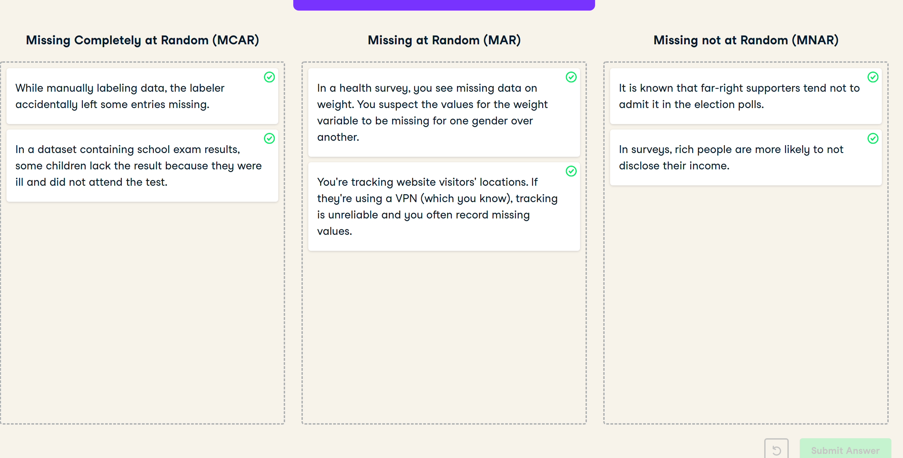 ## t-test for MAR: data preparation Great work on classifying the missing data mechanisms in the last exercise! Of all three, MAR is arguably the most important one to detect, as many imputation methods assume the data are MAR. This exercise will, therefore, focus on testing for MAR.
You will be working with the familiar biopics data. The goal is to test whether the number of missing values in earnings differs per subject’s gender. In this exercise, you will only prepare the data for the t-test. First, you will create a dummy variable indicating missingness in earnings. Then, you will split it per gender by first filtering the data to keep one of the genders, and then pulling the dummy variable. For filtering, it might be helpful to print biopics’s head() in the console and examine the gender variable.
# Create a dummy variable for missing earnings
biopics <- biopics %>%
mutate(missing_earnings = ifelse(is.na(earnings), TRUE, FALSE))
# Pull the missing earnings dummy for males
missing_earnings_males <- biopics %>%
filter(sub_sex == "Male") %>%
pull(missing_earnings)
# Pull the missing earnings dummy for females
missing_earnings_females <- biopics %>%
filter(sub_sex == "Female") %>%
pull(missing_earnings)
# Run the t-test
t.test(missing_earnings_males, missing_earnings_females)
Welch Two Sample t-test
data: missing_earnings_males and missing_earnings_females
t = 1.1116, df = 294.39, p-value = 0.2672
alternative hypothesis: true difference in means is not equal to 0
95 percent confidence interval:
-0.03606549 0.12969214
sample estimates:
mean of x mean of y
0.4366438 0.3898305 - Notice how the missing earnings percentage is not significantly different for both genders, even though the sample values (at the bottom of the test’s output) differ by almost 5 percentage points. Also, keep in mind that the conclusion that the data are not MAR is only valid for the specific variables we have tested.
Aggregation plot
The aggregation plot provides the answer to the basic question one may ask about an incomplete dataset: in which combinations of variables the data are missing, and how often? It is very useful for gaining a high-level overview of the missingness patterns. For example, it makes it immediately visible if there is some combination of variables that are often missing together, which might suggest some relation between them.
In this exercise, you will first draw the aggregation plot for the biopics data and then practice making conclusions based on it. Let’s do some plotting!
# Load the VIM package
library(VIM)
# Draw an aggregation plot of biopics
biopics %>%
aggr(combined = TRUE, numbers = TRUE)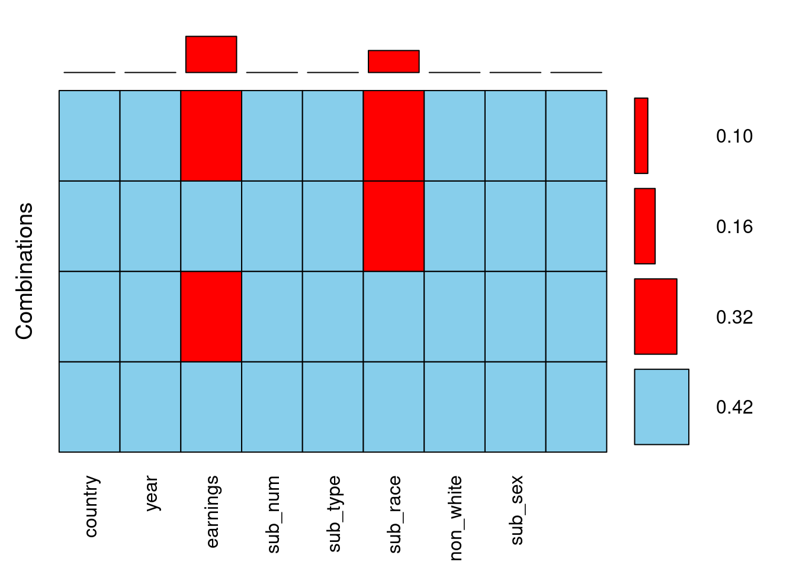
10% of the observations have missing values in both earnings and sub_race.
There are more missing values in sub_race than in earnings. This is false
42% of the observations have no missing entries.
There are exactly two variables in the biopics data that have missing values.
This one is false! It is actually the other way round, there are more missing values in earnings. You can see it from the bars above the plot. Now that you have a high-level overview of the missingness in the data, let’s look more closely at specific variables!
Spine plot
The aggregation plot you have drawn in the previous exercise gave you some high-level overview of the missing data. If you are interested in the interaction between specific variables, a spine plot is the way to go. It allows you to study the percentage of missing values in one variable for different values of the other, which is conceptually very similar to the t-tests you have been running in the previous lesson.
In this exercise, you will draw a spine plot to investigate the percentage of missing data in earnings for different categories of sub_race. Is there more missing data on earnings for some specific races of the movie’s main character? Let’s find out! The VIM package has already been loaded for you.
# Draw a spine plot to analyse missing values in earnings by sub_race
biopics %>%
select(sub_race, earnings) %>% as.data.frame() %>%
spineMiss()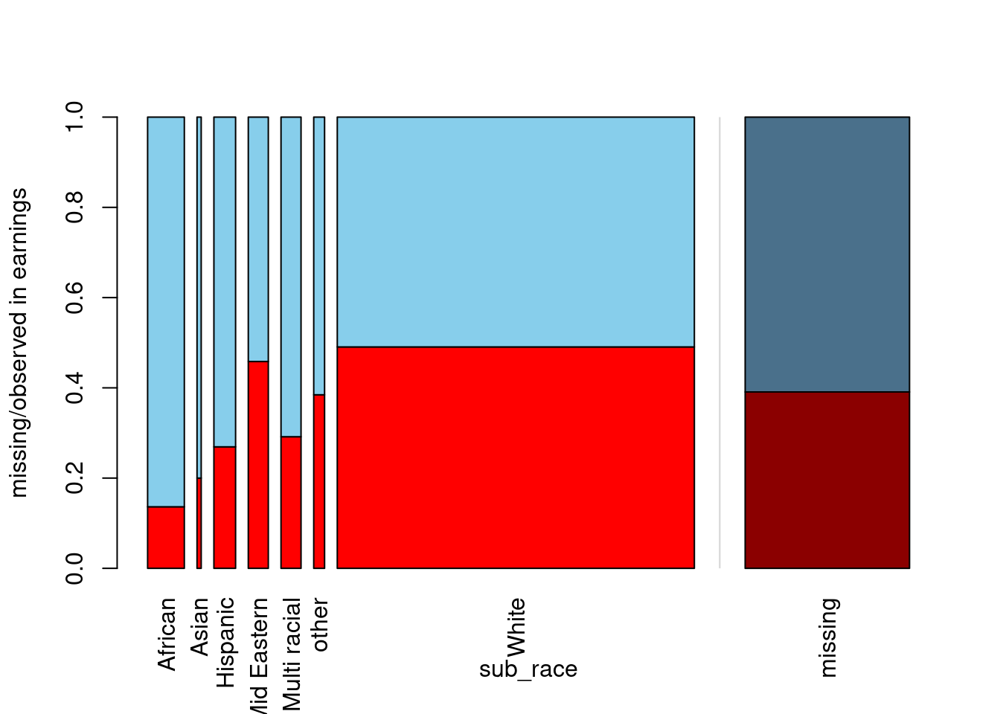
Based on the spine plot you have just created, which of the following statements is false?
In the vast majority of movies, the main character is white.
When the main subject is African, we are the most likely to have complete earnings information.
As far as earnings and sub_race are concerned, the data seem to be MAR.
The race that appears most rarely in the data has around 40% of earnings missing.
- This one is false! The scarcest race is Asian, as this bar is the thinnest. The missing earnings, however, amount to around 20%, not 40%. Let’s build upon the idea of a spine plot to create one more visualization in the next exercise!
Mosaic plot
The spine plot you have created in the previous exercise allows you to study missing data patterns between two variables at a time. This idea is generalized to more variables in the form of a mosaic plot.
In this exercise, you will start by creating a dummy variable indicating whether the United States was involved in the production of each movie. To do this, you will use the grepl() function, which checks if the string passed as its first argument is present in the object passed as its second argument. Then, you will draw a mosaic plot to see if the subject’s gender correlates with the amount of missing data on earnings for both US and non-US movies.
The biopics data as well as the VIM package are already loaded for you. Let’s do some exploratory plotting!
Note that a propriety display_image()function has been created to return the output from the latest VIMpackage version. Make sure to expand the HTML Viewer section.
# Prepare data for plotting and draw a mosaic plot
biopics %>%
# Create a dummy variable for US-produced movies
mutate(is_US_movie = grepl("US", country)) %>%
# Draw mosaic plot
mosaicMiss(highlight = "earnings",
plotvars = c("is_US_movie", "sub_sex"))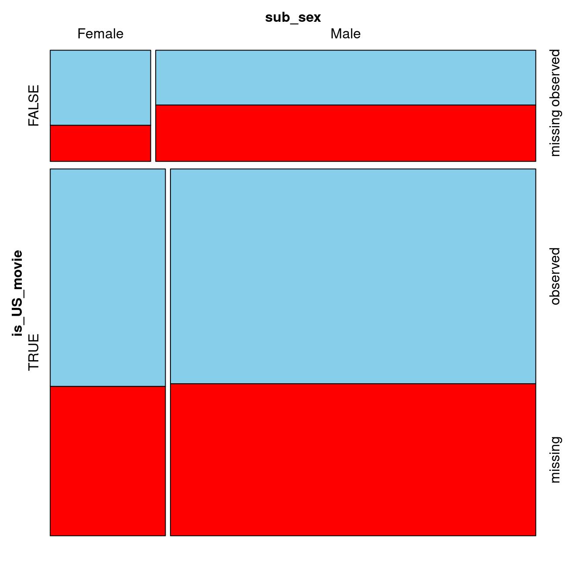
# Return plot from latest VIM package - expand the HTML viewer section
#display_image()- Before you expand the output, notice how, for non-US movies, there is less missing data on earnings for movies featuring females. This doesn’t look MCAR! You are now done with Chapter 1 and ready to take a deep dive into imputation methods.
Donor-based imputation
Smelling the danger of mean imputation
One of the most popular imputation methods is the mean imputation, in which missing values in a variable are replaced with the mean of the observed values in this variable. However, in many cases this simple approach is a poor choice. Sometimes a quick look at the data can already alert you to the dangers of mean-imputing.
In this chapter, you will be working with a subsample of the Tropical Atmosphere Ocean (tao) project data. The dataset consists of atmospheric measurements taken in two different time periods at five different locations. The data comes with the VIM package.
In this exercise you will familiarize yourself with the data and perform a simple analysis that will indicate what the consequences of mean imputation could be. Let’s take a look at the tao data!
Print first 10 observations
tao <- read.csv("data/tao.csv")
# Print first 10 observations
head(tao, 10) year latitude longitude sea_surface_temp air_temp humidity uwind vwind
1 1997 0 -110 27.59 27.15 79.6 -6.4 5.4
2 1997 0 -110 27.55 27.02 75.8 -5.3 5.3
3 1997 0 -110 27.57 27.00 76.5 -5.1 4.5
4 1997 0 -110 27.62 26.93 76.2 -4.9 2.5
5 1997 0 -110 27.65 26.84 76.4 -3.5 4.1
6 1997 0 -110 27.83 26.94 76.7 -4.4 1.6
7 1997 0 -110 28.01 27.04 76.5 -2.0 3.5
8 1997 0 -110 28.04 27.11 78.3 -3.7 4.5
9 1997 0 -110 28.02 27.21 78.6 -4.2 5.0
10 1997 0 -110 28.05 27.25 76.9 -3.6 3.5Get the number of missing values per column
# Get the number of missing values per column
tao %>%
is.na() %>%
colSums() year latitude longitude sea_surface_temp
0 0 0 3
air_temp humidity uwind vwind
81 93 0 0 Calculate the number of missing values in air_temp per year
# Calculate the number of missing values in air_temp per year
tao %>%
group_by(year) %>%
summarize(num_miss = sum(is.na(air_temp))) %>%
kable()| year | num_miss |
|---|---|
| 1993 | 4 |
| 1997 | 77 |
Mean-imputing the temperature
Mean imputation can be a risky business. If the variable you are mean-imputing is correlated with other variables, this correlation might be destroyed by the imputed values. You saw it looming in the previous exercise when you analyzed the air_temp variable.
To find out whether these concerns are valid, in this exercise you will perform mean imputation on air_temp, while also creating a binary indicator for where the values are imputed. It will come in handy in the next exercise, when you will be assessing your imputation’s performance. Let’s fill in those missing values!
tao_imp <- tao %>%
# Create a binary indicator for missing values in air_temp
mutate(air_temp_imp = ifelse(is.na(air_temp), TRUE, FALSE)) %>%
# Impute air_temp with its mean
mutate(air_temp = ifelse(is.na(air_temp), mean(air_temp, na.rm = TRUE), air_temp))
# Print the first 10 rows of tao_imp
head(tao_imp, 10) %>%
head() %>%
kable()| year | latitude | longitude | sea_surface_temp | air_temp | humidity | uwind | vwind | air_temp_imp |
|---|---|---|---|---|---|---|---|---|
| 1997 | 0 | -110 | 27.59 | 27.15 | 79.6 | -6.4 | 5.4 | FALSE |
| 1997 | 0 | -110 | 27.55 | 27.02 | 75.8 | -5.3 | 5.3 | FALSE |
| 1997 | 0 | -110 | 27.57 | 27.00 | 76.5 | -5.1 | 4.5 | FALSE |
| 1997 | 0 | -110 | 27.62 | 26.93 | 76.2 | -4.9 | 2.5 | FALSE |
| 1997 | 0 | -110 | 27.65 | 26.84 | 76.4 | -3.5 | 4.1 | FALSE |
| 1997 | 0 | -110 | 27.83 | 26.94 | 76.7 | -4.4 | 1.6 | FALSE |
Assessing imputation quality with margin plot
In the last exercise, you have mean-imputed air_temp and added an indicator variable to denote which values were imputed, called air_temp_imp. Time to see how well this works.
Upon examining the tao data, you might have noticed that it also contains a variable called sea_surface_temp, which could reasonably be expected to be positively correlated with air_temp. If that’s the case, you would expect these two temperatures to be both high or both low at the same time. Imputing mean air temperature when the sea temperature is high or low would break this relation.
To find out, in this exercise you will select the two temperature variables and the indicator variable and use them to draw a margin plot. Let’s assess the mean imputation!
# Draw a margin plot of air_temp vs sea_surface_temp
tao_imp %>%
select(air_temp, sea_surface_temp, air_temp_imp) %>%
marginplot(delimiter = "imp")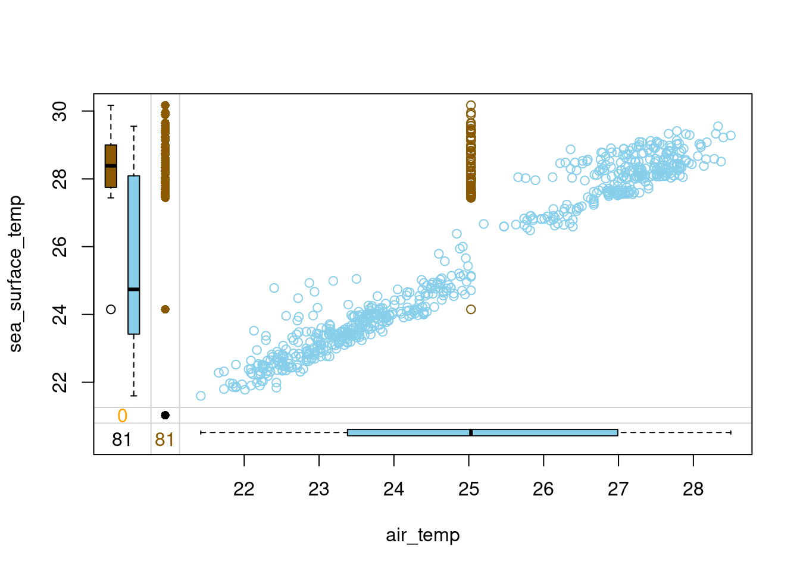
Question
Judging by the margin plot you have drawn, what’s wrong with this mean imputation?
Possible Answers
All the imputed air_temp values are the same, no matter the sea_surface_temp. This breaks the correlation between these two variables.
The imputed values are located in the space where there is no observed data, which makes them outliers.
The variance of the imputed data differs from the one of observed data.
All three above answers are correct. correct
- Notice how air and sea surface temperatures correlate. Imputing average air temperature in the observations where sea surface temperature is high creates clearly outlying data points and destroys the relation between these two variables. If the sea surface temperature is high, we would like to impute air temperature values that are also high. Head over to the upcoming video to learn a method that is able to do that!
The problem of mean imputation
ggplot(tao_imp, aes(air_temp, sea_surface_temp, color = air_temp_imp))+
geom_point()+
scale_color_brewer(name = "Imputed", type = "qual", palette = "Dark2")+
theme(legend.position = "bottom")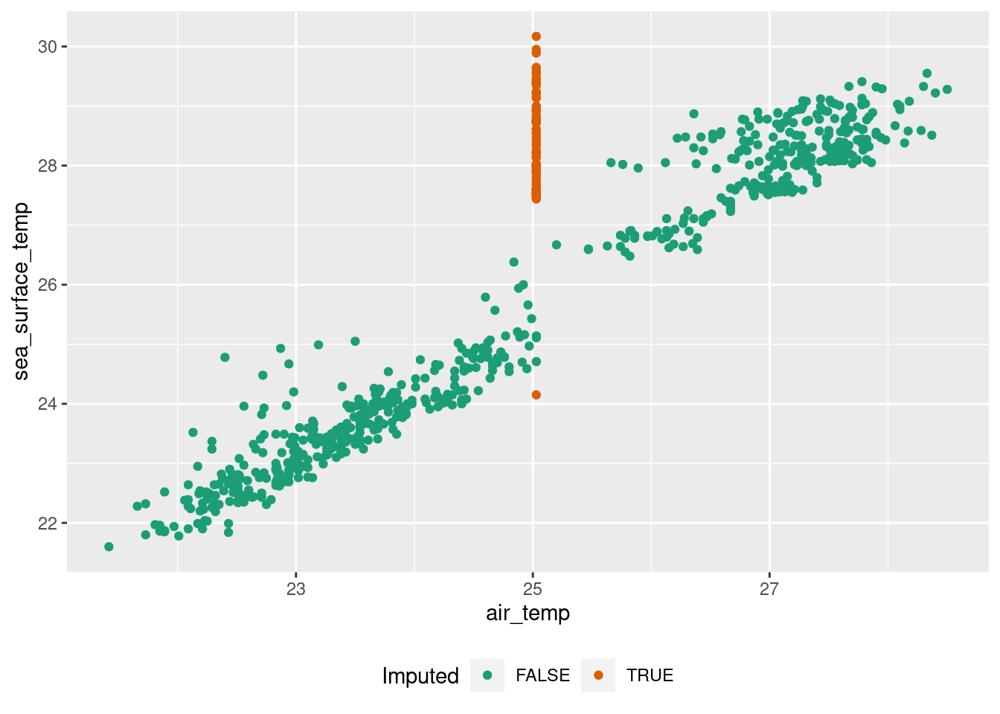
Vanilla hot-deck
Hot-deck imputation is a simple method that replaces every missing value in a variable by the last observed value in this variable. It’s very fast, as only one pass through the data is needed, but in its simplest form, hot-deck may sometimes break relations between the variables.
In this exercise, you will try it out on the tao dataset. You will hot-deck-impute missing values in the air temperature column air_temp and then draw a margin plot to analyze the relation between the imputed values with the sea surface temperature column sea_surface_temp. Let’s see how it works!
# Load VIM package
library(VIM)
# Impute air_temp in tao with hot-deck imputation
tao_imp <- hotdeck(tao, variable = "air_temp")
# Check the number of missing values in each variable
tao_imp %>%
is.na() %>%
colSums() year latitude longitude sea_surface_temp
0 0 0 3
air_temp humidity uwind vwind
0 93 0 0
air_temp_imp
0 # Draw a margin plot of air_temp vs sea_surface_temp
tao_imp %>%
select(air_temp, sea_surface_temp, air_temp_imp) %>%
marginplot(delimiter = "imp")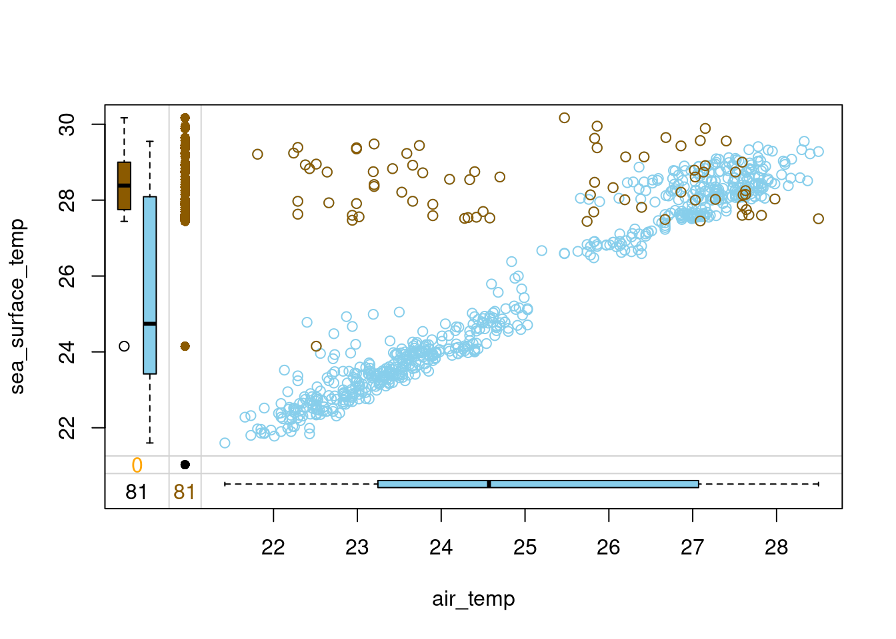
- Does the imputation look good? Notice the observations in the top left part of the plot with imputed air_temp and high sea_surface_temp. These observations must have been preceded by ones with low air_temp in the data frame, and so after hot-deck imputation, they ended up being outliers with low air_temp and high sea_surface_temp.
Hot-deck tricks & tips I: imputing within domains
One trick that may help when hot-deck imputation breaks the relations between the variables is imputing within domains. What this means is that if the variable to be imputed is correlated with another, categorical variable, one can simply run hot-deck separately for each of its categories.
For instance, you might expect air temperature to depend on time, as we are seeing the average temperatures rising due to global warming. The time indicator you have available in the tao data is a categorical variable, year. Let’s first check if the average air temperature is different in each of the two studied years and then run hot-deck within year domains. Finally, you will draw the margin plot again to assess the imputation performance.
# Calculate mean air_temp per year
tao %>%
group_by(year) %>%
summarize(average_air_temp = mean(air_temp, na.rm = TRUE)) %>%
kable()| year | average_air_temp |
|---|---|
| 1993 | 23.36596 |
| 1997 | 27.10979 |
# Hot-deck-impute air_temp in tao by year domain
tao_imp <- hotdeck(tao, variable = "air_temp", domain_var = "year")
# Draw a margin plot of air_temp vs sea_surface_temp
tao_imp %>%
select(air_temp, sea_surface_temp, air_temp_imp) %>%
marginplot(delimiter = "imp")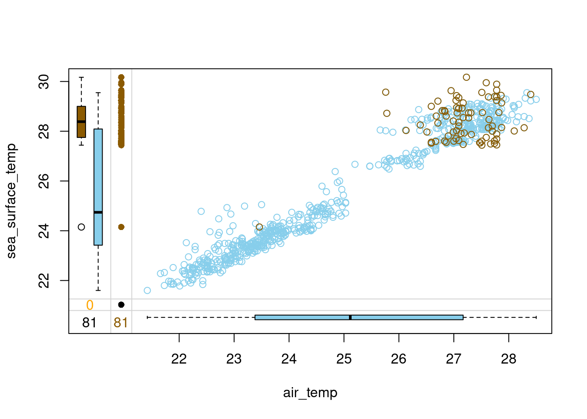
- The results look much better this time. However, if you look at the top right corner of the plot, you will see that the variance in the imputed (orange) values is somewhat larger than among the observed (blue) values. Let’s see if we can improve even further in the next exercise
Just a little experiment
# Hot-deck-impute air_temp in tao ordering by sea_surface_temp
tao_imp <- hotdeck(tao,
variable = "air_temp",
ord_var = "sea_surface_temp",
domain_var = "year")
# Draw a margin plot of air_temp vs sea_surface_temp
tao_imp %>%
select(air_temp, sea_surface_temp, air_temp_imp) %>%
marginplot(delimiter = "imp")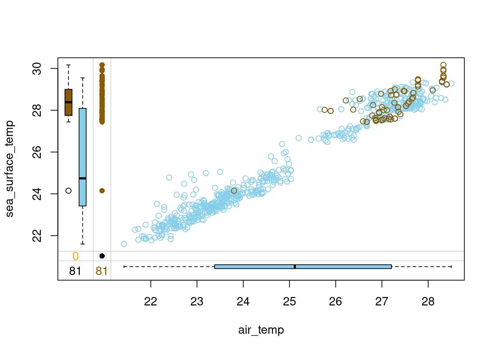
Choosing the number of neighbors
k-Nearest-Neighbors (or kNN) imputation fills the missing values in an observation based on the values coming from the k other observations that are most similar to it. The number of these similar observations, called neighbors, that are considered is a parameter that has to be chosen beforehand.
How to choose k? One way is to try different values and see how they impact the relations between the imputed and observed data.
Let’s try imputing humidity in the tao data using three different values of k and see how the imputed values fit the relation between humidity and sea_surface_temp.
- Impute humidity with kNN imputation using 30 neighbors and draw a marginplot() of sea_surface_temp vs humidity.
# Impute humidity using 30 neighbors
tao_imp <- kNN(tao, k = 30, variable = "humidity")
# Draw a margin plot of sea_surface_temp vs humidity
tao_imp %>%
select(sea_surface_temp, humidity, humidity_imp) %>%
marginplot(delimiter = "imp", main = "k = 30")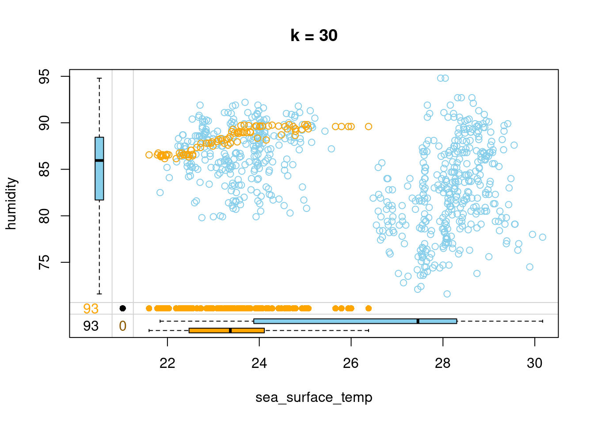
- Impute humidity with kNN imputation using 15 neighbors and draw a margin plot of sea_surface_temp vs humidity.
# Impute humidity using 15 neighbors
tao_imp <- kNN(tao, k = 15, variable = "humidity")
# Draw a margin plot of sea_surface_temp vs humidity
tao_imp %>%
select(sea_surface_temp, humidity, humidity_imp) %>%
marginplot(delimiter = "imp", main = "k = 15")- Impute humidity with kNN imputation using 5 neighbors and draw a margin plot of sea_surface_temp vs humidity.
# Impute humidity using 5 neighbors
tao_imp <- kNN(tao, k = 5, variable = "humidity")
# Draw a margin plot of sea_surface_temp vs humidity
tao_imp %>%
select(sea_surface_temp, humidity, humidity_imp) %>%
marginplot(delimiter = "imp", main = "k = 5")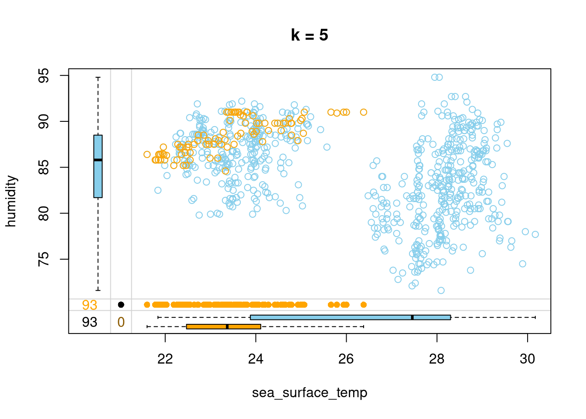
- You can browse through the three plots you have just drawn. The last one seems to capture the most variation in the data, so you should be good to use k = 5 in this case. Let’s look at how we can improve on this default kNN imputation with some tricks!
kNN tricks & tips I: weighting donors
A variation of kNN imputation that is frequently applied uses the so-called distance-weighted aggregation. What this means is that when we aggregate the values from the neighbors to obtain a replacement for a missing value, we do so using the weighted mean and the weights are inverted distances from each neighbor. As a result, closer neighbors have more impact on the imputed value.
In this exercise, you will apply the distance-weighted aggregation while imputing the tao data. This will only require passing two additional arguments to the kNN() function. Let’s try it out!
# Load the VIM package
library(VIM)
# Impute humidity with kNN using distance-weighted mean
tao_imp <- kNN(tao,
k = 5,
variable = "humidity",
numFun = weighted.mean,
weightDist = TRUE)
tao_imp %>%
select(sea_surface_temp, humidity, humidity_imp) %>%
marginplot(delimiter = "imp")- Distance-weighted aggregation makes the kNN imputation more robust to situations where an observation is unique in some way and doesn’t have many very similar neighbors. In such cases, the least similar neighbors get assigned a small weight and contribute less to the imputed values. Head over to the last exercise of this chapter to learn one more trick that makes kNN more robust and accurate!
kNN tricks & tips II: sorting variables
As the k-Nearest Neighbors algorithm loops over the variables in the data to impute them, it computes distances between observations using other variables, some of which have already been imputed in the previous steps. This means that if the variables located earlier in the data have a lot of missing values, then the subsequent distance calculation is based on a lot of imputed values. This introduces noise to the distance calculation.
For this reason, it is a good practice to sort the variables increasingly by the number of missing values before performing kNN imputation. This way, each distance calculation is based on as much observed data and as little imputed data as possible.
Let’s try this out on the tao data!
# Get tao variable names sorted by number of NAs
vars_by_NAs <- tao %>%
is.na() %>%
colSums() %>%
sort(decreasing = FALSE) %>%
names()
vars_by_NAs[1] "year" "latitude" "longitude" "uwind"
[5] "vwind" "sea_surface_temp" "air_temp" "humidity" # Sort tao variables and feed it to kNN imputation
tao_imp <- tao %>%
select(vars_by_NAs) %>%
kNN(k = 5)
tao_imp %>%
select(sea_surface_temp, humidity, humidity_imp) %>%
marginplot(delimiter = "imp")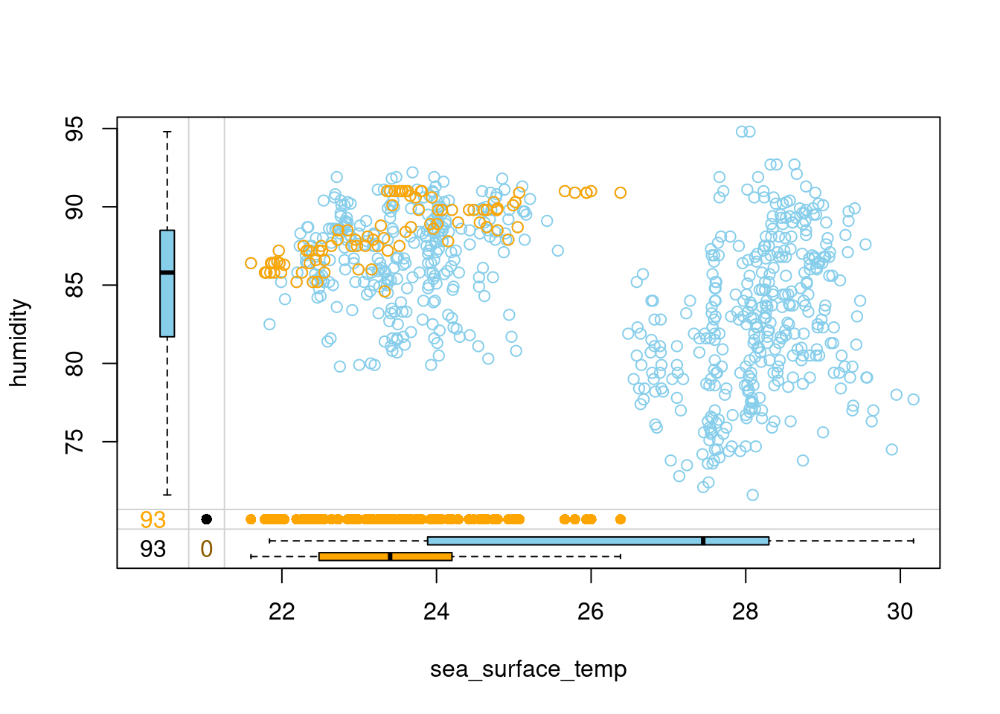
- The kNN you have just coded should be more accurate and robust against faulty imputations, so remember to sort your variables first before performing kNN imputation! This brings us to the end of this chapter. Keep it up! See you in Chapter 3, where you will learn to use statistical and machine learning models to impute missing values!
Model-based imputation
Linear regression imputation
Sometimes, you can use domain knowledge, previous research or simply your common sense to describe the relations between the variables in your data. In such cases, model-based imputation is a great solution, as it allows you to impute each variable according to a statistical model that you can specify yourself, taking into account any assumptions you might have about how the variables impact each other.
For continuous variables, a popular model choice is linear regression. It doesn’t restrict you to linear relations though! You can always include a square or a logarithm of a variable in the predictors. In this exercise, you will work with the simputation package to run a single linear regression imputation on the tao data and analyze the results. Let’s give it a try!
# Load the simputation package
library(simputation)
# Impute air_temp and humidity with linear regression
formula <- air_temp + humidity ~ year + latitude + sea_surface_temp
tao_imp <- impute_lm(tao, formula)
# Check the number of missing values per column
tao_imp %>%
is.na() %>%
colSums() year latitude longitude sea_surface_temp
0 0 0 3
air_temp humidity uwind vwind
3 2 0 0 # Print rows of tao_imp in which air_temp or humidity are still missing
tao_imp %>%
filter(is.na(air_temp) | is.na(humidity)) %>%
kable()| year | latitude | longitude | sea_surface_temp | air_temp | humidity | uwind | vwind |
|---|---|---|---|---|---|---|---|
| 1993 | 0 | -95 | NA | NA | NA | -5.6 | 3.1 |
| 1993 | 0 | -95 | NA | NA | NA | -6.3 | 0.5 |
| 1993 | -2 | -95 | NA | NA | 89.9 | -3.4 | 2.4 |
- Linear regression fails when at least one of the predictors is missing. In this case, it was sea_surface_temp. In the next exercise, you will fix it by initializing the missing values before running impute_lm()
Initializing missing values & iterating over variables
As you have just seen, running impute_lm() might not fill-in all the missing values. To ensure you impute all of them, you should initialize the missing values with a simple method, such as the hot-deck imputation you learned about in the previous chapter, which simply feeds forward the last observed value.
Moreover, a single imputation is usually not enough. It is based on the basic initialized values and could be biased. A proper approach is to iterate over the variables, imputing them one at a time in the locations where they were originally missing.
In this exercise, you will first initialize the missing values with hot-deck imputation and then loop five times over air_temp and humidity from the tao data to impute them with linear regression. Let’s get to it!
# Initialize missing values with hot-deck
tao_imp <- hotdeck(tao)
# Create boolean masks for where air_temp and humidity are missing
missing_air_temp <- tao_imp$air_temp_imp
missing_humidity <- tao_imp$humidity_imp
for (i in 1:5) {
# Set air_temp to NA in places where it was originally missing and re-impute it
tao_imp$air_temp[missing_air_temp] <- NA
tao_imp <- impute_lm(tao_imp, air_temp ~ year + latitude + sea_surface_temp + humidity)
# Set humidity to NA in places where it was originally missing and re-impute it
tao_imp$humidity[missing_humidity] <- NA
tao_imp <- impute_lm(tao_imp, humidity ~ year + latitude + sea_surface_temp + air_temp)
}- That’s a professional approach to model-based imputation you have just coded! But how do we know that 5 is the proper number of iterations to run? Let’s look at the convergence in the next exercise!
Detecting convergence
Great job iterating over the variables in the last exercise! But how many iterations are needed? When the imputed values don’t change with the new iteration, we can stop.
You will now extend your code to compute the differences between the imputed variables in subsequent iterations. To do this, you will use the Mean Absolute Percentage Change function, defined for you as follows:
mapc <- function(a, b) { mean(abs(b - a) / a, na.rm = TRUE) } mapc() outputs a single number that tells you how much b differs from a. You will use it to check how much the imputed variables change across iterations. Based on this, you will decide how many of them are needed!
The boolean masks missing_air_temp and missing_humidity are available for you, as is the hotdeck-initialized tao_imp data.
mapc <- function(a, b) {
mean(abs(b - a) / a, na.rm = TRUE)
}
diff_air_temp <- c()
diff_humidity <- c()
for (i in 1:5) {
# Assign the outcome of the previous iteration (or initialization) to prev_iter
prev_iter <- tao_imp
# Impute air_temp and humidity at originally missing locations
tao_imp$air_temp[missing_air_temp] <- NA
tao_imp <- impute_lm(tao_imp, air_temp ~ year + latitude + sea_surface_temp + humidity)
tao_imp$humidity[missing_humidity] <- NA
tao_imp <- impute_lm(tao_imp, humidity ~ year + latitude + sea_surface_temp + air_temp)
# Calculate MAPC for air_temp and humidity and append them to previous iteration's MAPCs
diff_air_temp <- c(diff_air_temp, mapc(prev_iter$air_temp, tao_imp$air_temp))
diff_humidity <- c(diff_humidity, mapc(prev_iter$humidity, tao_imp$humidity))
}
df_diff <- data.frame(diff_air_temp, diff_humidity)
plot_diffs <- function(a, b) {
data.frame("mapc" = c(a, b),
"Variable" = c(rep("air_temp", length(a)),
rep("humidity", length(b))),
"Iterations" = c(1:length(a), 1:length(b))) %>%
ggplot(aes(Iterations, mapc, color = Variable)) +
geom_line(size = 1.5) +
ylab("Mean absolute percentage change") +
ggtitle("Changes in imputed variables' values across iterations") +
theme(legend.position = "bottom")
}
plot_diffs(diff_air_temp, diff_humidity)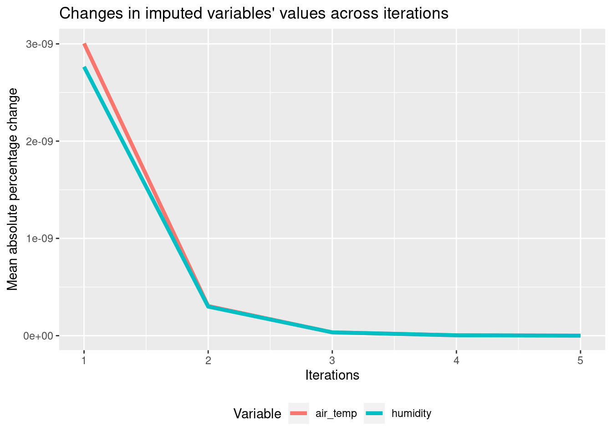
- Two are enough, as the third one brings virtually no change anymore!
Logistic regression imputation
A popular choice for imputing binary variables is logistic regression. Unfortunately, there is no function similar to impute_lm() that would do it. That’s why you’ll write such a function yourself!
Let’s call the function impute_logreg(). Its first argument will be a data frame df, whose missing values have been initialized and only containing missing values in the column to be imputed. The second argument will be a formula for the logistic regression model.
The function will do the following:
Keep the locations of missing values. Build the model. Make predictions. Replace missing values with predictions. Don’t worry about the line creating imp_var - this is just a way to extract the name of the column to impute from the formula. Let’s do some functional programming!
impute_logreg <- function(df, formula) {
# Extract name of response variable
imp_var <- as.character(formula[2])
# Save locations where the response is missing
missing_imp_var <- is.na(df[imp_var])
# Fit logistic regression mode
logreg_model <- glm(formula, data = df, family = binomial)
# Predict the response and convert it to 0s and 1s
preds <- predict(logreg_model, type = "response")
preds <- ifelse(preds >= 0.5, 1, 0)
# Impute missing values with predictions
df[missing_imp_var, imp_var] <-preds[missing_imp_var]
return(df)
}Drawing from conditional distribution
Simply calling predict() on a model will always return the same value for the same values of the predictors. This results in a small variability in imputed data. In order to increase it, so that the imputation replicates the variability from the original data, we can draw from the conditional distribution. What this means is that instead of always predicting 1 whenever the model outputs a probability larger than 0.5, we can draw the prediction from a binomial distribution described by the probability returned by the model.
You will work on the code you have written in the previous exercise. The following line was removed:
preds <- ifelse(preds >= 0.5, 1, 0) Your task is to fill its place with drawing from a binomial distribution. That’s just one line of code!
impute_logreg <- function(df, formula) {
# Extract name of response variable
imp_var <- as.character(formula[2])
# Save locations where the response is missing
missing_imp_var <- is.na(df[imp_var])
# Fit logistic regression mode
logreg_model <- glm(formula, data = df, family = binomial)
# Predict the response
preds <- predict(logreg_model, type = "response")
# Sample the predictions from binomial distribution
preds <- rbinom(length(preds), size = 1, prob = preds)
# Impute missing values with predictions
df[missing_imp_var, imp_var] <- preds[missing_imp_var]
return(df)
}- Drawing from the conditional distribution will make the imputed data’s variability more similar to the one of original, observed data. With this powerful function at hand, you are now ready to design a model-based imputation flow that takes care of both continuous and binary variables. Let’s do it in the next exercise!
Model-based imputation with multiple variable types
Great job on writing the function to implement logistic regression imputation with drawing from conditional distribution. That’s pretty advanced statistics you have coded! In this exercise, you will combine what you learned so far about model-based imputation to impute different types of variables in the tao data.
Your task is to iterate over variables just like you have done in the previous chapter and impute two variables:
is_hot, a new binary variable that was created out of air_temp, which is 1 if air_temp is at or above 26 degrees and is 0 otherwise; humidity, a continuous variable you are already familiar with. You will have to use the linear regression function you have learned before, as well as your own function for logistic regression. Let’s get to it!
# Initialize missing values with hot-deck
tao <- tao %>%
mutate(is_hot = ifelse(air_temp > 26, 1, 0))
tao_imp <- hotdeck(tao)
# Create boolean masks for where is_hota and humidity are missing
missing_is_hot <- tao_imp$is_hot_imp
missing_humidity <- tao_imp$humidity_imp
for (i in 1:3) {
# Set is_hot to NA in places where it was originally missing and re-impute it
tao_imp$is_hot[missing_is_hot] <- NA
tao_imp <- impute_logreg(tao_imp, is_hot ~ sea_surface_temp)
# Set humidity to NA in places where it was originally missing and re-impute it
tao_imp$humidity[missing_humidity] <- NA
tao_imp <- impute_lm(tao_imp,
humidity ~ sea_surface_temp + air_temp)
}- You have used the simputation package where possible, filling the gaps with your own programming, in order to run a model-based imputation that takes care of both continuous and binary variables, additionally inreasing variability in imputed data in the latter case. Well done! Let’s continue to the final lesson of this chapter, where you will learn how to use tree-based machine learning models for imputation.
Imputing with random forests
A machine learning approach to imputation might be both more accurate and easier to implement compared to traditional statistical models. First, it doesn’t require you to specify relationships between variables. Moreover, machine learning models such as random forests are able to discover highly complex, non-linear relations and exploit them to predict missing values.
In this exercise, you will get acquainted with the missForest package, which builds a separate random forest to predict missing values for each variable, one by one. You will call the imputing function on the biographic movies data, biopics, which you have worked with earlier in the course and then extract the filled-in data as well as the estimated imputation errors.
Let’s plant some random forests!
# Load the missForest package
biopics <- read_csv("data/biopics.csv")
library(missForest)
cont_lev <- c("UK", "US/UK", "Canada US",
"Canada/UK", "US/Canada", "US/UK/Canada")
biopics <- biopics %>%
mutate(country = factor(country, levels = cont_lev))
biopics <- biopics %>%
mutate_if(is.character, factor)
# Impute biopics data using missForest
biopics <- as.data.frame(biopics)
imp_res <- missForest(biopics)
# Extract imputed data and check for missing values
imp_data <- imp_res$ximpnhanes_imp
print(sum(is.na(imp_data)))[1] 0# Extract and print imputation errors
imp_err <- imp_res$OOBerror
print(imp_err) NRMSE PFC
0.01745213 0.12773985 Note that missForest() outputs a list and you have to manually extract the imputed data - it’s a common mistake to overlook it when building a data processing pipeline. Also, take a look at the errors. Can you tell which variables have been imputed particularly well? Let’s look at it more closely in the next exercise!
Variable-wise imputation errors
In the previous exercise you have extracted the estimated imputation errors from missForest’s output. This gave you two numbers:
the normalized root mean squared error (NRMSE) for all continuous variables; the proportion of falsely classified entries (PFC) for all categorical variables. However, it could well be that the imputation model performs great for one continuous variable and poor for another! To diagnose such cases, it is enough to tell missForest to produce variable-wise error estimates. This is done by setting the variablewise argument to TRUE.
The biopics data and missForest package have already been loaded for you, so let’s take a closer look at the errors!
# Impute biopics data with missForest computing per-variable errors
imp_res <- missForest(biopics, variablewise = TRUE)
# Extract and print imputation errors
per_variable_errors <- imp_res$OOBerror
print(per_variable_errors) PFC MSE MSE MSE PFC PFC
0.3818898 0.0000000 1162.8846061 0.0000000 0.0000000 0.1790780
MSE PFC
0.0000000 0.0000000 # Rename errors' columns to include variable names
names(per_variable_errors) <- paste(names(biopics),
names(per_variable_errors),
sep = "_")
# Print the renamed errors
print(per_variable_errors) country_PFC year_MSE earnings_MSE sub_num_MSE sub_type_PFC
0.3818898 0.0000000 1162.8846061 0.0000000 0.0000000
sub_race_PFC non_white_MSE sub_sex_PFC
0.1790780 0.0000000 0.0000000 Speed-accuracy trade-off
In the last video, you have seen there are two knobs you can tune to influence the performance of the random forests:
Number of decision trees in each forest. Number of variables used for splitting within decision trees. Increasing each of them might improve the accuracy of the imputation model, but it will also require more time to run. In this exercise, you will explore these ideas yourself by fitting missForest() to the biopics data twice with different settings. As you follow the instructions, pay attention to the errors you will be printing, and to the time the code takes to run.
# Set number of trees to 50 and number of variables used for splitting to 6
imp_res <- missForest(biopics, ntree = 5, mtry = 2)
# Print the resulting imputation errors
print(imp_res$OOBerror) NRMSE PFC
0.02462704 0.21627387 # Set number of trees to 50 and number of variables used for splitting to 6
imp_res <- missForest(biopics, ntree = 50, mtry = 6)
# Print the resulting imputation errors
print(imp_res$OOBerror) NRMSE PFC
0.02039315 0.12592143 - Compare the errors and the run times of the two imputation models. Can you see a relation? There ain’t no such thing as a free lunch, they say. To get a more precise imputation, you had to spend more in computing time! Congratulations on finishing the chapter! See you in the final chapter, where you will learn to incorporate uncertainty from imputation into your analyses and predictions.
Uncertainty from imputation
Wrapping imputation & modeling in a function
Whenever you perform any analysis or modeling on imputed data, you should account for the uncertainty from imputation. Running a model on a dataset imputed only once ignores the fact that imputation estimates the missing values with uncertainty. Standard errors from such a model tend to be too small. The solution to this is multiple imputation and one way to implement it is by bootstrapping.
In the upcoming exercises, you will work with the familiar biopics data. The goal is to use multiple imputation by bootstrapping and linear regression to see if, based on the data at hand, biographical movies featuring females earn less than those about males.
Let’s start with writing a function that creates a bootstrap sample, imputes it, and fits a linear regression model.
calc_gender_coef <- function(data, indices) {
# Get bootstrap sample
data_boot <- data[indices, ]
# Impute with kNN imputation
data_imp <- kNN(data_boot, k = 5)
# Fit linear regression
linear_model <- lm(earnings ~ sub_sex + sub_type + year,data = data_imp)
# Extract and return gender coefficient
gender_coefficient <- coef(linear_model)[2]
return(gender_coefficient)
}The calc_gender_coef() function you have just coded takes the data and bootstrap indices as inputs, and outputs our statistic of interest - the impact of gender on earnings from linear regression. You can now feed this function to the bootstrapping algorithm!
Running the bootstrap
Good job writing calc_gender_coef() in the last exercise! This function creates a bootstrap sample, imputes it and, outputs the linear regression coefficient describing the impact of movie subject’s being a female on the movie’s earnings.
In this exercise, you will use the boot package in order to obtain a bootstrapped distribution of such coefficients. The spread of this distribution will capture the uncertainty from imputation. You will also look at how the bootstrapped distribution differs from a single-time imputation and regression. Let’s do some bootstrapping!
# Load the boot library
library(boot)
# Run bootstrapping on biopics data
boot_results <- boot(biopics, statistic = calc_gender_coef, R = 50)
# Print and plot bootstrapping results
print(boot_results)
ORDINARY NONPARAMETRIC BOOTSTRAP
Call:
boot(data = biopics, statistic = calc_gender_coef, R = 50)
Bootstrap Statistics :
original bias std. error
t1* 2.259627 -0.6050632 3.865107plot(boot_results)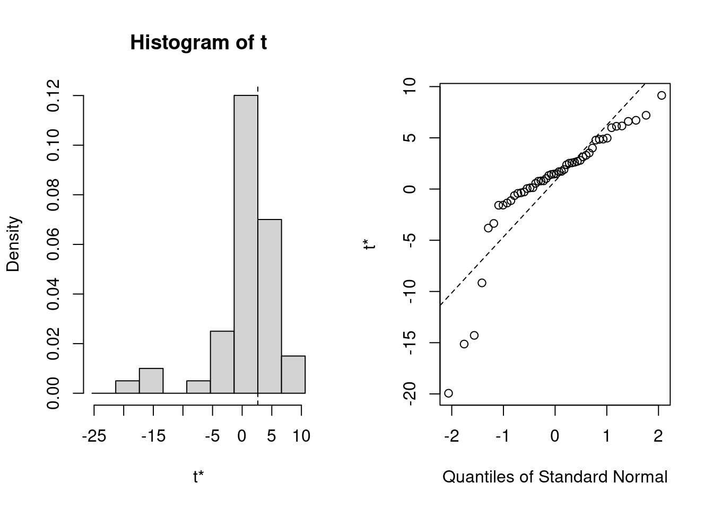
# Calculate and print confidence interval
boot_ci <- boot.ci(boot_results, conf = .95, type = "norm")
print(boot_ci)BOOTSTRAP CONFIDENCE INTERVAL CALCULATIONS
Based on 50 bootstrap replicates
CALL :
boot.ci(boot.out = boot_results, conf = 0.95, type = "norm")
Intervals :
Level Normal
95% (-4.711, 10.440 )
Calculations and Intervals on Original Scale- If you had run the kNN imputation and the regression analysis on biopics data only once, you would have obtained the female-coefficient of -1.45 (called ‘original’ in the console output), suggesting that movies about females indeed earn less. However, correcting for the uncertainty from imputation, you have obtained the distribution that covers both negative and postive values!
Bootstrapping confidence intervals
Having bootstrapped the distribution of the female-effect coefficient in the last exercise, you can now use it to estimate a confidence interval. It will allow you to make the following assessment about your data: “Given the uncertainty from imputation, we are 95% sure that the female-effect on earnings is between a and b”, where a and b are the lower and upper bounds of the interval.
In the last exercise, you have run bootstrapping with R = 50 replicates. In most applications, however, this is not enough. In this exercise, you can use boot_results that were prepared for you using 1000 replicates. First, you will look at the bootstrapped distribution to see if it looks normal. If so, you can then rely on the normal distribution to calculate the confidence interval.
# Run bootstrapping on biopics data
boot_results <- boot(biopics, statistic = calc_gender_coef, R = 1000)
# Print and plot bootstrapping results
print(boot_results)
ORDINARY NONPARAMETRIC BOOTSTRAP
Call:
boot(data = biopics, statistic = calc_gender_coef, R = 1000)
Bootstrap Statistics :
original bias std. error
t1* 1.968578 -0.7306231 3.682093plot(boot_results)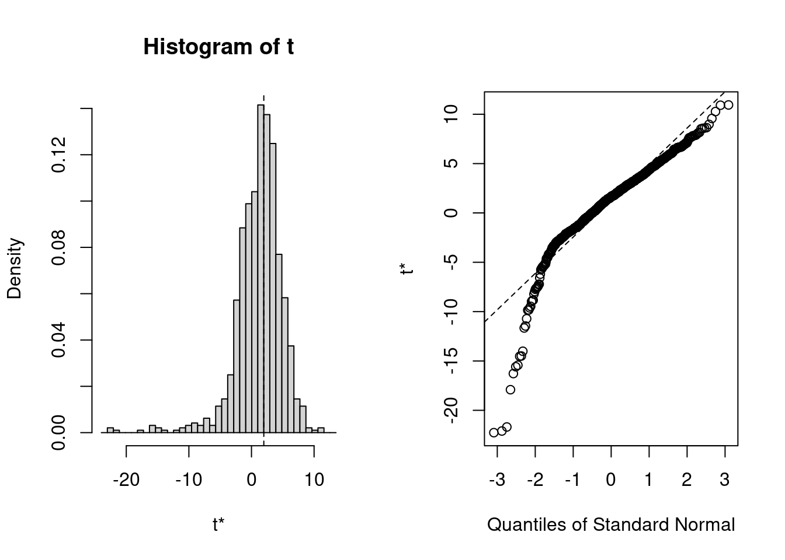
# Calculate and print confidence interval
boot_ci <- boot.ci(boot_results, conf = .95, type = "norm")
print(boot_ci)BOOTSTRAP CONFIDENCE INTERVAL CALCULATIONS
Based on 1000 bootstrap replicates
CALL :
boot.ci(boot.out = boot_results, conf = 0.95, type = "norm")
Intervals :
Level Normal
95% (-4.518, 9.916 )
Calculations and Intervals on Original Scale- Despite the coefficient leaning to be a negative relationship, bootstrap replicates show that some movies with female leads actually earn more! Accounting for the uncertainty from imputation, you cannot be 100% sure about the direction of this relation, even though a single analysis suggests otherwise.
The mice flow: mice - with - pool
Multiple imputation by chained equations, or MICE, allows us to estimate the uncertainty from imputation by imputing a data set multiple times with model-based imputation, while drawing from conditional distributions. This way, each imputed data set is slightly different. Then, an analysis is conducted on each of them and the results are pooled together, yielding the quantities of interest, alongside their confidence intervals that reflect the imputation uncertainty.
In this exercise, you will practice the typical MICE flow: mice() - with() - pool(). You will perform a regression analysis on the biopics data to see which subject occupation, sub_type, is associated with highest movie earnings. Let’s play with mice!
# Load mice package
library(mice)
# Impute biopics with mice using 5 imputations
biopics_multiimp <- mice(biopics, m = 5, seed = 3108)
iter imp variable
1 1 country earnings sub_race
1 2 country earnings sub_race
1 3 country earnings sub_race
1 4 country earnings sub_race
1 5 country earnings sub_race
2 1 country earnings sub_race
2 2 country earnings sub_race
2 3 country earnings sub_race
2 4 country earnings sub_race
2 5 country earnings sub_race
3 1 country earnings sub_race
3 2 country earnings sub_race
3 3 country earnings sub_race
3 4 country earnings sub_race
3 5 country earnings sub_race
4 1 country earnings sub_race
4 2 country earnings sub_race
4 3 country earnings sub_race
4 4 country earnings sub_race
4 5 country earnings sub_race
5 1 country earnings sub_race
5 2 country earnings sub_race
5 3 country earnings sub_race
5 4 country earnings sub_race
5 5 country earnings sub_race# Fit linear regression to each imputed data set
lm_multiimp <- with(biopics_multiimp, lm(earnings~year+sub_type ))
# Pool and summarize regression results
lm_pooled <- pool(lm_multiimp)
summary(lm_pooled, conf.int = TRUE, conf.level = 0.95) term estimate std.error statistic
1 (Intercept) -408.5476080 188.003023 -2.17309063
2 year 0.2195188 0.091547 2.39788059
3 sub_typeAcademic (Philosopher) -12.0393151 39.386794 -0.30566883
4 sub_typeActivist -12.5649024 12.493282 -1.00573272
5 sub_typeActor -23.5461708 15.296101 -1.53935771
6 sub_typeActress -17.5662047 12.764488 -1.37617778
7 sub_typeActress / activist 20.3881286 35.764655 0.57006362
8 sub_typeArtist -22.4452374 13.451761 -1.66857238
9 sub_typeAthlete -0.8963086 13.009378 -0.06889712
10 sub_typeAthlete / military 82.4367906 35.569407 2.31763188
11 sub_typeAuthor -19.1635360 12.262989 -1.56271336
12 sub_typeAuthor (poet) -20.0620382 14.444056 -1.38894771
13 sub_typeComedian -18.1686840 16.980795 -1.06995483
14 sub_typeCriminal -5.8479945 13.420469 -0.43575187
15 sub_typeGovernment 16.0450423 46.390726 0.34586746
16 sub_typeHistorical -3.7623435 11.294642 -0.33310871
17 sub_typeJournalist -22.8565780 26.181388 -0.87300866
18 sub_typeMedia -7.0627461 18.145706 -0.38922410
19 sub_typeMedicine 19.1339721 20.966662 0.91259031
20 sub_typeMilitary 27.6733819 17.764776 1.55776701
21 sub_typeMilitary / activist 41.9247600 35.860752 1.16909873
22 sub_typeMusician -14.1096056 11.123075 -1.26849868
23 sub_typeOther -12.5957619 11.127539 -1.13194499
24 sub_typePolitician -8.9752400 35.860752 -0.25028030
25 sub_typeSinger -2.3189932 14.863480 -0.15601953
26 sub_typeTeacher 55.5076474 35.777696 1.55145953
27 sub_typeWorld leader 1.9363047 14.102239 0.13730477
df p.value 2.5 % 97.5 %
1 8.441788 0.05977554 -838.16570234 21.0704863
2 8.986358 0.04007631 0.01237714 0.4266604
3 78.086760 0.76067020 -90.45102629 66.3723961
4 23.732194 0.32468917 -38.36517557 13.2353708
5 23.125611 0.13728938 -55.17905857 8.0867171
6 63.616800 0.17359176 -43.06915926 7.9367499
7 533.362518 0.56887459 -49.86873468 90.6449919
8 17.334211 0.11316311 -50.78434701 5.8938723
9 11.560021 0.94624889 -29.36142352 27.5688062
10 610.794724 0.02079891 12.58361683 152.2899644
11 18.269586 0.13527579 -44.89989577 6.5728238
12 40.490599 0.17244132 -49.24354989 9.1194734
13 68.008128 0.28842244 -52.05326005 15.7158921
14 10.341265 0.67197238 -35.61744245 23.9214534
15 5.438799 0.74242360 -100.36959617 132.4596809
16 19.622883 0.74258502 -27.35161361 19.8269266
17 401.472498 0.38318021 -74.32631797 28.6131621
18 10.959555 0.70456670 -47.01916501 32.8936729
19 11.569949 0.38008106 -26.73749557 65.0054398
20 7.029288 0.16307001 -14.29818398 69.6449479
21 499.260259 0.24292173 -28.53182460 112.3813447
22 20.977532 0.21851670 -37.24281435 9.0236032
23 15.905797 0.27443480 -36.19645010 11.0049264
24 499.260259 0.80247354 -79.43182460 61.4813447
25 16.388102 0.87792336 -33.76762529 29.1296390
26 528.585147 0.12139010 -14.77627920 125.7915739
27 27.018773 0.89180799 -26.99815808 30.8707674You have followed the mice - with - pool flow to impute, model and pool the results. Now take a look at the console output: a couple of sub_types have a positive impact on earnings. However, accounting for imputation uncertainty with 95% confidence, we are never sure of these effects, as the lower bounds are negative! With one exception: for sub_typeAthlete / military, both upper and lower bounds are positive. What we can say for sure is thus that movies about military athletes are popular!
Choosing default models
MICE creates a separate imputation model for each variable in the data. What kind of model it is depends on the type of the variable in question. A popular way to specify the kinds of models we want to use is set a default model for each of the four variable types.
You can do this by passing the defaultMethod argument to mice(), which should be a vector of length 4 containing the default imputation methods for:
Continuous variables, Binary variables, Categorical variables (unordered factors), Factor variables (ordered factors). In this exercise, you will take advantage of mice’s documentation to view the list of available methods and to pick the desired ones for the algorithm to use. Let’s do some model selection!
# Impute biopics using the methods specified in the instruction
biopics_multiimp <- mice(biopics, m = 20,
defaultMethod = c("cart", "lda", "pmm", "polr"))
iter imp variable
1 1 country earnings sub_race
1 2 country earnings sub_race
1 3 country earnings sub_race
1 4 country earnings sub_race
1 5 country earnings sub_race
1 6 country earnings sub_race
1 7 country earnings sub_race
1 8 country earnings sub_race
1 9 country earnings sub_race
1 10 country earnings sub_race
1 11 country earnings sub_race
1 12 country earnings sub_race
1 13 country earnings sub_race
1 14 country earnings sub_race
1 15 country earnings sub_race
1 16 country earnings sub_race
1 17 country earnings sub_race
1 18 country earnings sub_race
1 19 country earnings sub_race
1 20 country earnings sub_race
2 1 country earnings sub_race
2 2 country earnings sub_race
2 3 country earnings sub_race
2 4 country earnings sub_race
2 5 country earnings sub_race
2 6 country earnings sub_race
2 7 country earnings sub_race
2 8 country earnings sub_race
2 9 country earnings sub_race
2 10 country earnings sub_race
2 11 country earnings sub_race
2 12 country earnings sub_race
2 13 country earnings sub_race
2 14 country earnings sub_race
2 15 country earnings sub_race
2 16 country earnings sub_race
2 17 country earnings sub_race
2 18 country earnings sub_race
2 19 country earnings sub_race
2 20 country earnings sub_race
3 1 country earnings sub_race
3 2 country earnings sub_race
3 3 country earnings sub_race
3 4 country earnings sub_race
3 5 country earnings sub_race
3 6 country earnings sub_race
3 7 country earnings sub_race
3 8 country earnings sub_race
3 9 country earnings sub_race
3 10 country earnings sub_race
3 11 country earnings sub_race
3 12 country earnings sub_race
3 13 country earnings sub_race
3 14 country earnings sub_race
3 15 country earnings sub_race
3 16 country earnings sub_race
3 17 country earnings sub_race
3 18 country earnings sub_race
3 19 country earnings sub_race
3 20 country earnings sub_race
4 1 country earnings sub_race
4 2 country earnings sub_race
4 3 country earnings sub_race
4 4 country earnings sub_race
4 5 country earnings sub_race
4 6 country earnings sub_race
4 7 country earnings sub_race
4 8 country earnings sub_race
4 9 country earnings sub_race
4 10 country earnings sub_race
4 11 country earnings sub_race
4 12 country earnings sub_race
4 13 country earnings sub_race
4 14 country earnings sub_race
4 15 country earnings sub_race
4 16 country earnings sub_race
4 17 country earnings sub_race
4 18 country earnings sub_race
4 19 country earnings sub_race
4 20 country earnings sub_race
5 1 country earnings sub_race
5 2 country earnings sub_race
5 3 country earnings sub_race
5 4 country earnings sub_race
5 5 country earnings sub_race
5 6 country earnings sub_race
5 7 country earnings sub_race
5 8 country earnings sub_race
5 9 country earnings sub_race
5 10 country earnings sub_race
5 11 country earnings sub_race
5 12 country earnings sub_race
5 13 country earnings sub_race
5 14 country earnings sub_race
5 15 country earnings sub_race
5 16 country earnings sub_race
5 17 country earnings sub_race
5 18 country earnings sub_race
5 19 country earnings sub_race
5 20 country earnings sub_race# Print biopics_multiimp
print(biopics_multiimp)Class: mids
Number of multiple imputations: 20
Imputation methods:
country year earnings sub_num sub_type sub_race non_white sub_sex
"pmm" "" "cart" "" "" "pmm" "" ""
PredictorMatrix:
country year earnings sub_num sub_type sub_race non_white sub_sex
country 0 1 1 1 1 1 1 1
year 1 0 1 1 1 1 1 1
earnings 1 1 0 1 1 1 1 1
sub_num 1 1 1 0 1 1 1 1
sub_type 1 1 1 1 0 1 1 1
sub_race 1 1 1 1 1 0 1 1
Number of logged events: 300
it im dep meth
1 1 1 country pmm
2 1 1 earnings cart
3 1 1 sub_race pmm
4 1 2 country pmm
5 1 2 earnings cart
6 1 2 sub_race pmm
out
1 sub_typeActress / activist, sub_typeAthlete / military, sub_typeGovernment, sub_typeMilitary / activist, sub_typePolitician, sub_typeTeacher
2 countryCanada US, sub_typeAcademic (Philosopher)
3 countryCanada US, sub_typeMilitary / activist
4 sub_typeActress / activist, sub_typeAthlete / military, sub_typeGovernment, sub_typeMilitary / activist, sub_typePolitician, sub_typeTeacher
5 countryCanada US, sub_typeAcademic (Philosopher)
6 countryCanada US, sub_typeMilitary / activist- The ability to specify imputation models might come in handy when you see some specific methods underperforming. Another factor infuencing how the imputation methods work is the set of predictors they use. Let’s look at how to set these in the next exercise.
Using predictor matrix
An important decision that needs to be taken when using model-based imputation is which variables should be included as predictors, and in which models. In mice(), this is governed by the predictor matrix and by default, all variables are used to impute all others.
In case of many variables in the data or little time to do a proper model selection, you can use mice’s functionality to create a predictor matrix based on the correlations between the variables. This matrix can then be passed to mice(). In this exercise, you will practice exactly this: you will first build a predictor matrix such that each variable will be imputed using variables most correlated to it; then, you will feed your predictor matrix to the imputing function. Let’s try this simple model selection!
# Create predictor matrix with minimum correlation of 0.1
pred_mat <- quickpred(biopics, mincor = 0.1)
# Impute biopics with mice
biopics_multiimp <- mice(biopics,
m = 10,
predictorMatrix = pred_mat,
seed = 3108)
iter imp variable
1 1 country earnings sub_race
1 2 country earnings sub_race
1 3 country earnings sub_race
1 4 country earnings sub_race
1 5 country earnings sub_race
1 6 country earnings sub_race
1 7 country earnings sub_race
1 8 country earnings sub_race
1 9 country earnings sub_race
1 10 country earnings sub_race
2 1 country earnings sub_race
2 2 country earnings sub_race
2 3 country earnings sub_race
2 4 country earnings sub_race
2 5 country earnings sub_race
2 6 country earnings sub_race
2 7 country earnings sub_race
2 8 country earnings sub_race
2 9 country earnings sub_race
2 10 country earnings sub_race
3 1 country earnings sub_race
3 2 country earnings sub_race
3 3 country earnings sub_race
3 4 country earnings sub_race
3 5 country earnings sub_race
3 6 country earnings sub_race
3 7 country earnings sub_race
3 8 country earnings sub_race
3 9 country earnings sub_race
3 10 country earnings sub_race
4 1 country earnings sub_race
4 2 country earnings sub_race
4 3 country earnings sub_race
4 4 country earnings sub_race
4 5 country earnings sub_race
4 6 country earnings sub_race
4 7 country earnings sub_race
4 8 country earnings sub_race
4 9 country earnings sub_race
4 10 country earnings sub_race
5 1 country earnings sub_race
5 2 country earnings sub_race
5 3 country earnings sub_race
5 4 country earnings sub_race
5 5 country earnings sub_race
5 6 country earnings sub_race
5 7 country earnings sub_race
5 8 country earnings sub_race
5 9 country earnings sub_race
5 10 country earnings sub_race# Print biopics_multiimp
print(biopics_multiimp)Class: mids
Number of multiple imputations: 10
Imputation methods:
country year earnings sub_num sub_type sub_race non_white sub_sex
"polyreg" "" "pmm" "" "" "polyreg" "" ""
PredictorMatrix:
country year earnings sub_num sub_type sub_race non_white sub_sex
country 0 1 1 0 0 0 0 0
year 0 0 0 0 0 0 0 0
earnings 1 1 0 0 0 1 1 0
sub_num 0 0 0 0 0 0 0 0
sub_type 0 0 0 0 0 0 0 0
sub_race 0 1 1 1 1 0 1 0
Number of logged events: 100
it im dep meth out
1 1 1 earnings pmm countryCanada US
2 1 1 sub_race polyreg sub_typeMilitary / activist
3 1 2 earnings pmm countryCanada US
4 1 2 sub_race polyreg sub_typeMilitary / activist
5 1 3 earnings pmm countryCanada US
6 1 3 sub_race polyreg sub_typeMilitary / activist- Look at the predictor matrix you’ve used that is printed in the console. Which variables have been used as predictors to impute earnings?
country, year and non_white
Provides an easy way to set up predictor matrices, but if you can afford it, you should try to choose the predictors based on the insights from data analytics or on domain knowledge.
Analyzing missing data patterns
The first step in working with incomplete data is to gain some insights into the missingness patterns, and a good way to do it is with visualizations. You will start your analysis of the africa data with employing the VIM package to create two visualizations: the aggregation plot and the spine plot. They will tell you how many data are missing, in which variables and configurations, and whether we can say something about the missing data mechanism. Let’s kick off with some plotting!
africa <- read.csv( "data/africa_clean.csv")
# Load VIM
library(VIM)
# Draw a combined aggregation plot of africa
africa %>%
aggr(combined = TRUE, numbers = TRUE)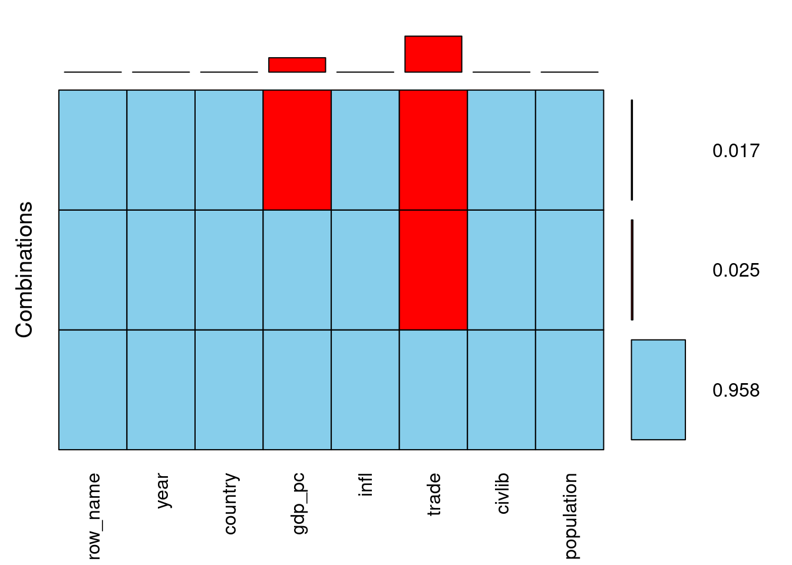
Question
- Based on the aggregation plot you have just created, which of the following statements is TRUE?
- ans Whenever gdp_pc is missing, trade is missing too
# Draw a spine plot of country vs trade
africa %>%
select(country ,trade) %>%
spineMiss()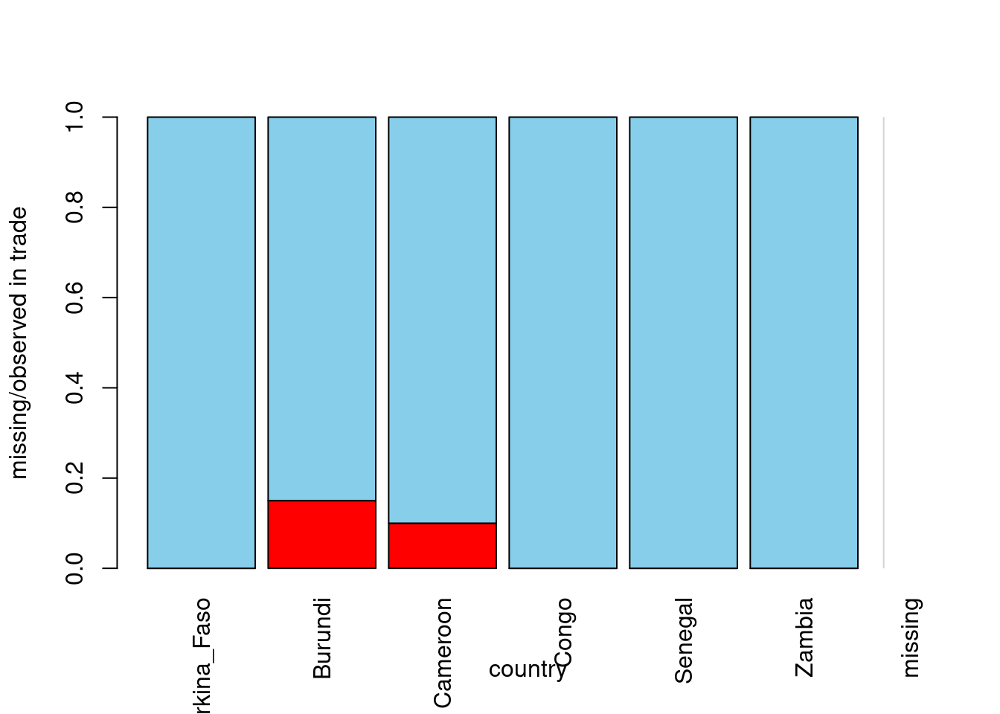
Question
- Based on the spine plot you have just created, which of the following statements is TRUE?
- Correct, there are not that many missing values! Also, notice from the spine plot that the africa data seem to be MAR - at least with respect to the GDP and country, which means it can be imputed. Let’s try multiple imputation to fill-in the missing values in the next exercise!
Imputing and inspecting outcomes
Good job on visualizing missing data in the previous exercise! You have discovered there are some missing entries in GDP, gdp_pc, and trade as percentage of GDP, trade. Also, you suspect the data are MAR, and thus imputable. In this exercise, you will make use of multiple imputation from the mice package to impute the africa data. Then, you will draw a strip plot of gdp_pc vs trade to see if the imputed data do not break the relation between these variables. Let mice do the job!
# Load mice
library(mice)
# Impute africa with mice
africa_multiimp <- mice(africa, m = 5, defaultMethod = "cart", seed = 3108)
iter imp variable
1 1 gdp_pc trade
1 2 gdp_pc trade
1 3 gdp_pc trade
1 4 gdp_pc trade
1 5 gdp_pc trade
2 1 gdp_pc trade
2 2 gdp_pc trade
2 3 gdp_pc trade
2 4 gdp_pc trade
2 5 gdp_pc trade
3 1 gdp_pc trade
3 2 gdp_pc trade
3 3 gdp_pc trade
3 4 gdp_pc trade
3 5 gdp_pc trade
4 1 gdp_pc trade
4 2 gdp_pc trade
4 3 gdp_pc trade
4 4 gdp_pc trade
4 5 gdp_pc trade
5 1 gdp_pc trade
5 2 gdp_pc trade
5 3 gdp_pc trade
5 4 gdp_pc trade
5 5 gdp_pc trade# Draw a stripplot of gdp_pc versus trade
stripplot(africa_multiimp, gdp_pc ~ trade | .imp, pch = 20, cex = 2)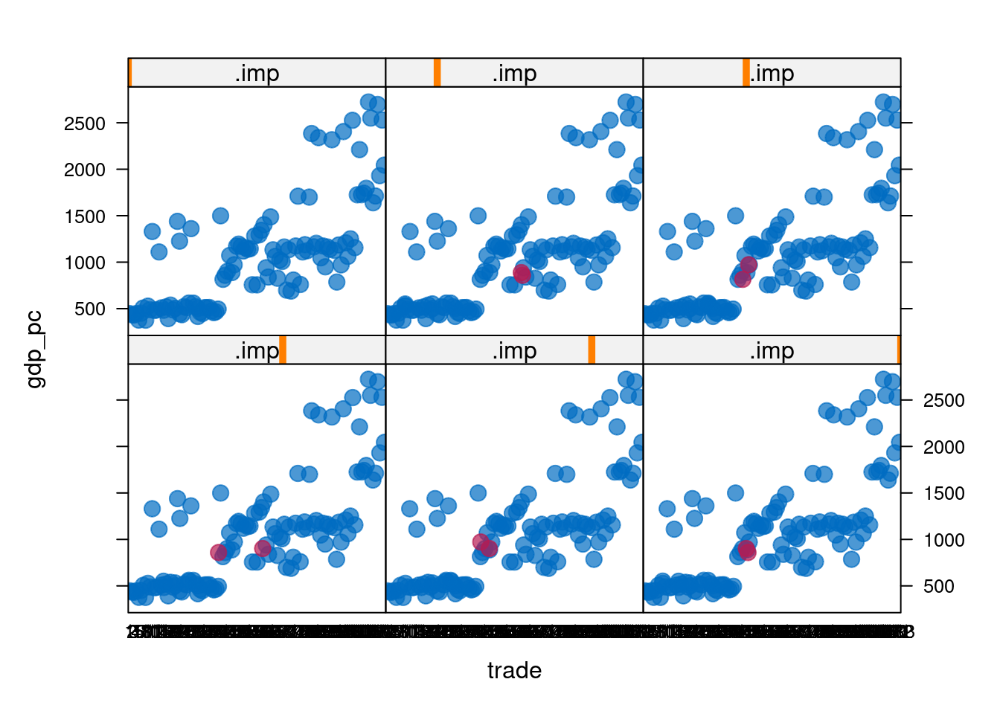
- t seems the imputation works well: there are small clusters in the scatter plots, likely corresponding to different countries. Each imputed data point fits into one of the clusters, instead of being an outlier somewhere between the clusters. Having done the imputation, you can now proceed to modeling!
Inference with imputed data
In the last exercise, you have run mice to multiply impute the africa data. In this one, you will implement the other two steps of the mice - with - pool flow you’ve learned about earlier in the course. The model of interest is a linear regression that explains the GDP, gdp_pc, with other variables. You are particularly interested in the coefficient of civil liberties, civlib. Is more liberty associated with more economic growth once we incorporate the uncertainty from imputation? Let’s find out!
# Fit linear regression to each imputed data set
lm_multiimp <- with(africa_multiimp, lm(gdp_pc ~ country + year + trade + infl + civlib))
# Pool regression results
lm_pooled <- pool(lm_multiimp)
# Summarize pooled results
summary(lm_pooled, conf.int = TRUE, conf.level = 0.90) term estimate std.error statistic df p.value
1 (Intercept) -30068.441810 5618.7067367 -5.3514880 107.7805 4.954407e-07
2 countryBurundi 67.199848 61.9274336 1.0851386 107.8599 2.802797e-01
3 countryCameroon 650.257144 58.5640793 11.1033444 107.1503 1.591166e-19
4 countryCongo 1343.288063 113.7299489 11.8112078 106.8653 4.209726e-21
5 countrySenegal 527.686999 78.7955032 6.6969177 106.7578 1.027035e-09
6 countryZambia 415.136577 83.9727225 4.9437075 107.0560 2.853378e-06
7 year 15.335776 2.8263293 5.4260402 107.7640 3.574950e-07
8 trade 4.941659 1.5893889 3.1091568 105.7726 2.410907e-03
9 infl -4.347124 0.9876079 -4.4016696 108.0009 2.533732e-05
10 civlib -49.411852 132.1837617 -0.3738118 107.4442 7.092809e-01
5 % 95 %
1 -39390.518971 -20746.364650
2 -35.544192 169.943888
3 553.087683 747.426605
4 1154.583058 1531.993068
5 396.945387 658.428610
6 275.808050 554.465103
7 10.646566 20.024986
8 2.304247 7.579071
9 -5.985649 -2.708598
10 -268.725783 169.902078Question
Based on the summary of the pooled regression results that you have just printed to the console, which of the following statements about the civil liberties in Africa is false?
Correct, this one is false! Since the lower and upper bounds have different signs, we cannot be sure of the direction of the effect. Congratulations, you have come a long way and learned a lot. Well done! Let’s sum it all up in the final video of the course.